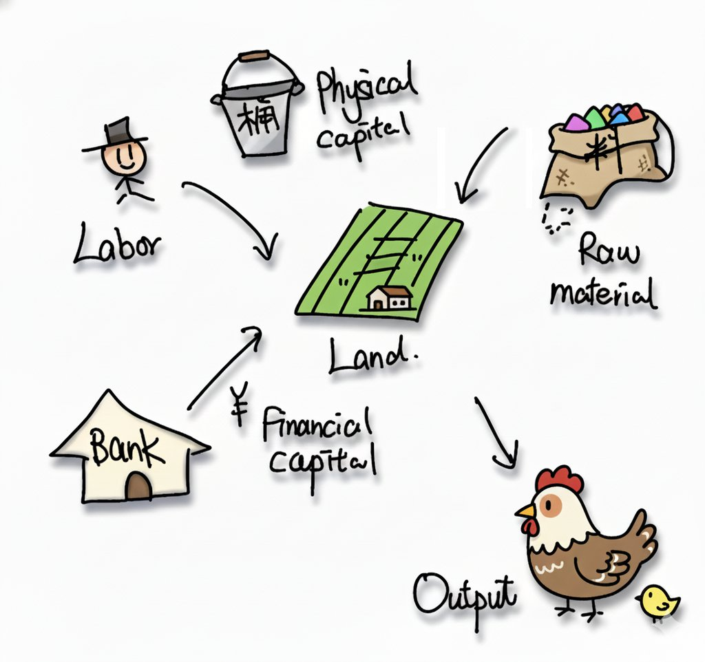
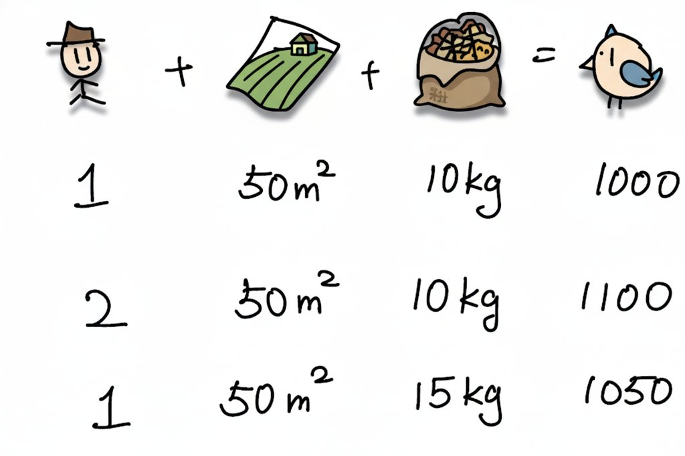
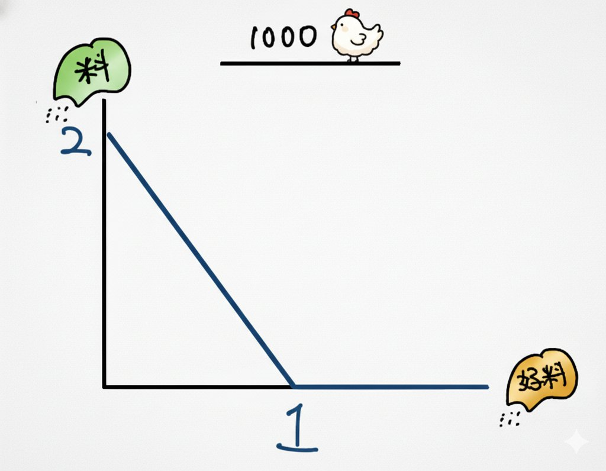
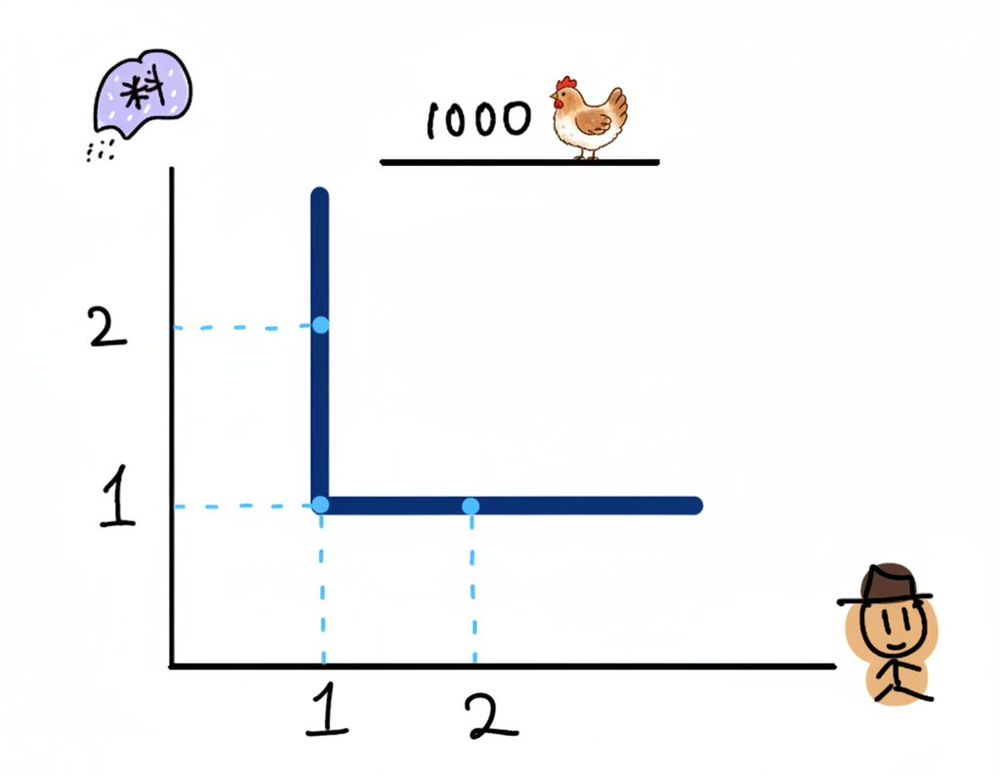
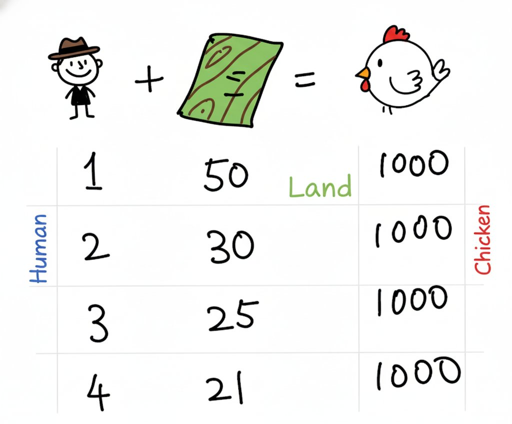
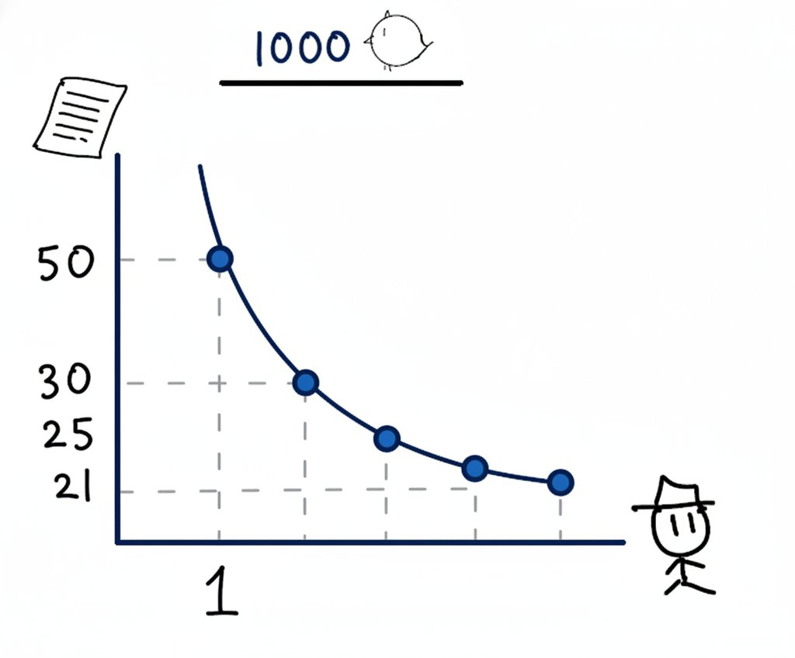
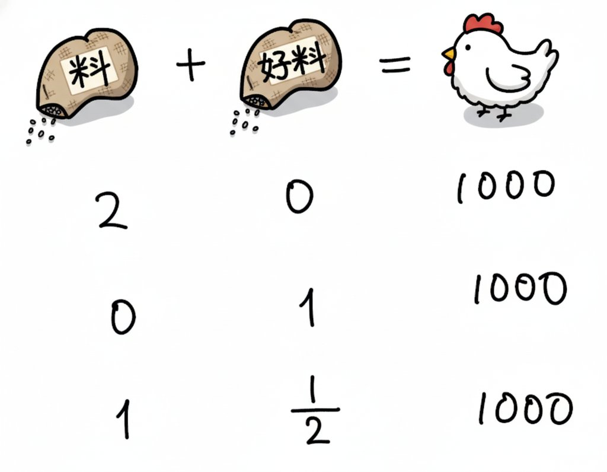
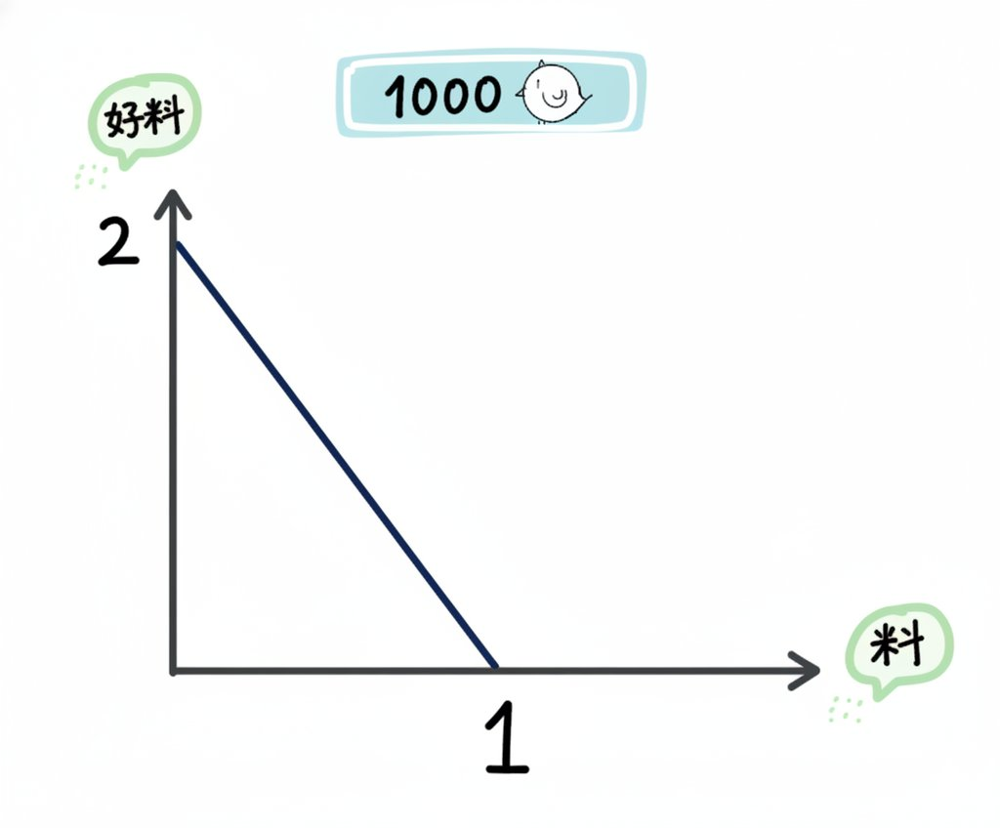
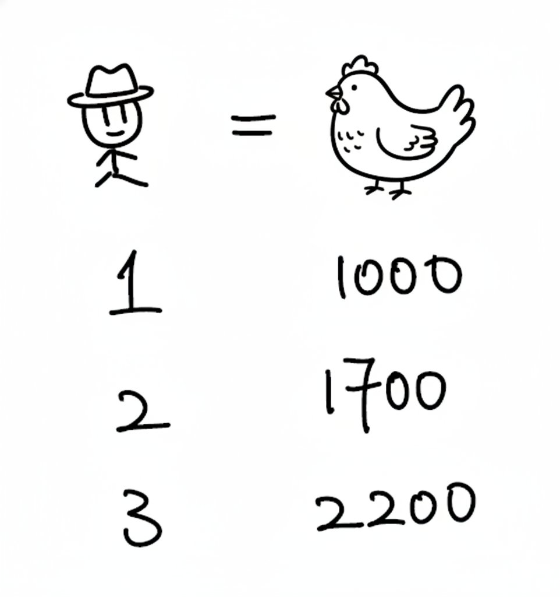
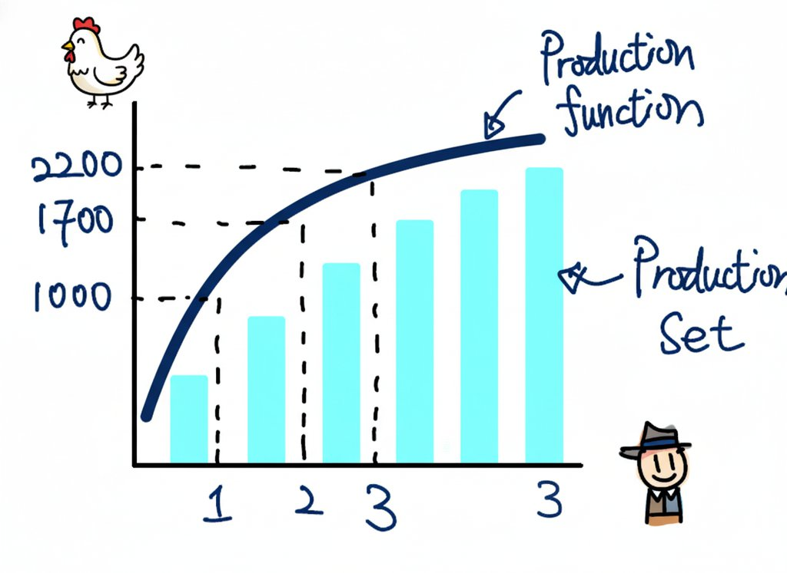

Lecture 1: Grandma, Let’s Talk About Starting a Chicken Farm#
📚 Core Theme: Production Theory
This lecture will introduce you to the concept of production in economics. Through the vivid example of Grandma’s chicken farm, we will understand core concepts such as inputs, outputs, isoquants, and production functions.
Grandma, do you remember when we used to feed chickens in the yard when I was little? Back then, the sun was warm on the ground, and the chicks were chirping and running around us. Actually, the “production” that economists study is just like us raising chickens—it’s a process of turning a pile of things into another pile of more useful things. Today, let’s talk about how economists would think about it if we wanted to open a real chicken farm.
📋 Learning Path
In this lecture, we will follow a strict logical order: from inputs and outputs to technological constraints, then understanding different technologies through three typical “isoquants”, introducing production functions and marginal products, and finally discussing returns to scale.
1. What Do We Need to Raise Chickens? — Inputs and Outputs#
You see, to raise chickens, we need to have things on hand. The lively chickens we get in the end are our Output. To get these chickens, we need to put in some things.
For example, the feed the chickens eat is called Raw Materials in economics. The place needed to raise chickens, the farm, is Land. The time the farmer spends taking care of the chickens is Labor.
Finally, there is Capital. This is divided into two types. The money we borrow from the bank to rent the farm and buy equipment is called Financial Capital. And the chicken coops, feeding troughs, and waterers we buy, which are tools that can be used repeatedly, are Physical Capital.
When we get all these Inputs together, we can start raising chickens and finally get Output.
{kind=link}

2. How Many Chickens Can We Raise? — Technological Constraints and Production Sets#
Alright, Grandma, now everything is ready. We have farmers, a farm, and feed. So exactly how many chickens can we raise?
Actually, this largely depends on how superb our technology is. You see, big companies like KFC and McDonald’s raise chickens fast and in large quantities, but we might be slower raising them at home. This “how superb the technology is” is what economists call Technological Constraints. It is defined as “all possible combinations of inputs that can be used to produce a given output”.
Because the word “technology” sounds abstract, economists measure it this way: see who can get more output with the same inputs. If we use the same inputs as last year but raise more chickens this year, it means our technology has improved.
Example: Different Input Combinations
Different input combinations yield different outputs:
Combination 1: 1 Farmer + 50 sqm Farm + 10 kg Feed = Can raise 1000 chickens
Combination 2: 2 Farmers + 50 sqm Farm + 10 kg Feed = Can raise 1100 chickens
Combination 3: 1 Farmer + 50 sqm Farm + 15 kg Feed = Can raise 1050 chickens
{kind=link}

All these possible “input-output” combinations together form a big book, which economists call the Production Set.
3. How to Draw Our “Chicken Raising Knack”? — Isoquants#
So, can we draw this “technological constraint” to make it look more intuitive? Of course! Let’s fix a target, say, producing 1000 chickens. Then we look at how different inputs need to be matched to achieve this goal. This line describing “all combinations of different inputs to produce the same output” is called an Isoquant.
Let’s look at three most typical situations:
Case 1: “Perfect Partners” That Must Be Matched in Proportion#
Suppose to raise 1000 chickens, we must have 1 Breeder paired with 1 Bag of Special Feed.
If we have 2 breeders but still only 1 bag of feed, the extra person is useless, and we can still only raise 1000 chickens.
Conversely, if we have 1 breeder and 2 bags of feed, he is short-handed and can’t finish feeding the extra feed, so we can still only raise 1000 chickens.
Only when we have 2 breeders and 2 bags of feed can the output double to 2000 chickens.
{kind=link}

Inputs that must be matched in a fixed proportion are called Perfect Complements, and their isoquant is L-shaped.
Definition: Perfect Complements Production Function
Perfect Complements Production Function (Leontief Production Function)
Mathematical Form: \(y = \min(ax_1, bx_2)\)
Example: \(y = \min(x_1, x_2)\), indicating that output y depends on the smaller of inputs x1 and x2.
Isoquant: L-shaped.
{kind=link}

Practice
Practice: Please try to draw the isoquant for the function \(y = \min(2x_1, x_2)\).
Case 2: “Flexible Combinations” That Can Replace Each Other#
Now let’s switch to two inputs: Farmers and Farm Space. Suppose our goal is still to produce 1000 chickens.
We can use 1 Farmer with 50 sqm of space, letting him farm intensively.
Or use 2 Farmers with 30 sqm of space, letting them manage intensively in a smaller place.
Or even 3 Farmers with 25 sqm of space…
{kind=link}

You see, farmers and space can substitute for each other. Fewer people mean more land is needed; more people mean land can be smaller. The isoquant drawn from this relationship is a beautiful curve bending towards the origin. This is the most common situation.
{kind=link}

Theorem: Cobb-Douglas Production Function
Cobb-Douglas Production Function
Mathematical Form: \(y = A \cdot x_1^a \cdot x_2^b\) (where A, a, b are all constants greater than 0)
Characteristics: Inputs can substitute for each other, but not perfectly 1:1.
Isoquant: A curve convex to the origin.
Practice
Practice: Please try to draw the isoquant for the function \(y = \sqrt{x_1 \cdot x_2}\).
Case 3: “Twins” That Work the Same and Can Be Swapped Freely#
The last case. Suppose someone comes to sell a “Golden Feed”.
Using 2 bags of Ordinary Feed can raise 1000 chickens.
Using 1 bag of Golden Feed can also raise 1000 chickens.
Then, using 1 bag of Ordinary Feed plus half a bag of Golden Feed has the same effect, still 1000 chickens.
The effects of these two feeds can be perfectly substituted in a fixed proportion; they are Perfect Substitutes. The isoquant drawn is a straight line.
{kind=link}

Definition: Linear Production Function
Linear Production Function
Mathematical Form: \(y = ax_1 + bx_2\)
Characteristics: Inputs x1 and x2 can be perfectly substituted at a fixed ratio a/b.
Isoquant: Straight line.
{kind=link}

Practice
Practice: Please try to draw the isoquant for the function \(y = 2x_1 + x_2\).
Grandma, look, by drawing these three types of graphs, we can see the technological relationship between different inputs with our own eyes. The Isoquant is the first core concept we learned today.
4. From “Line” to “Surface” — Production Function and Production Set#
Just now we were looking at inputs with fixed output. Now let’s reverse it and look at only one input, such as the number of breeders, and see its relationship with the total output of chickens.
1 Breeder can raise 1000 chickens.
2 Breeders can raise 1700 chickens.
3 Breeders can raise 2200 chickens.
{kind=link}

If we draw this relationship as a graph, with the number of breeders on the horizontal axis and the number of chickens on the vertical axis, the resulting line is called the Production Function. It plots the maximum output we can get given the inputs.
And this line and all the area below it constitute the Production Set we mentioned earlier.
The Production Function is the second core concept we need to remember.
{kind=link}

5. Two “Tempers” of Technology: More is Better, But Improvement Slows Down#
Grandma, look carefully at that production function line just now; it has two very simple “tempers”.
The first temper is: The line goes up. This is easy to understand; as long as they don’t cause trouble, the more farmers, the more chickens raised. This is called Monotonicity.
The second temper is: The line rises quickly at first, then becomes flatter and flatter. This means that when there are no farmers on the farm, the first one you hire can raise 1000 chickens, a huge contribution! But if there are already 5 farmers on the farm, the place is only so big. If you hire another one, everyone might get in each other’s way, and the additional output he brings might only be 500 chickens.
This concept of “how much extra output an additional unit of input can bring” is called Marginal Product (MP).
Definition: Marginal Product
Marginal Product (MP) refers to the increment in output resulting from increasing one unit of a certain input factor while keeping other input factors constant.
Mathematical Expression: \(MP = \frac{df(x)}{dx}\)
Monotonicity means: \(MP > 0\)
Diminishing Marginal Product means: MP is constantly getting smaller, i.e., \(\frac{d^2f(x)}{dx^2} < 0\)
This temper of “improvement slowing down” is the famous Law of Diminishing Marginal Product.
6. How to Swap People and Feed? — Technical Rate of Substitution#
Okay, let’s put these two “tempers” back onto the isoquant of two inputs to see.
Temper 1 (MP > 0) determines that the isoquant is downward sloping. The reason is simple: since both farmers and feed are useful, if you want to maintain the same output, if you use fewer farmers, you must use more feed to make up for it.
Temper 2 (Diminishing Marginal Product) determines that the isoquant is convex to the origin. Think about it, when there are very few farmers and a lot of feed, farmers are a precious “scarce resource”, and their marginal output is high. At this time, to replace one farmer, you have to use a lot of feed to make up for it. Conversely, when there are many farmers and little feed, feed becomes a treasure. If you have one less bag of feed, you have to add several farmers to make up for it.
This “exchange rate” is not fixed. The slope of a point on the isoquant represents the “exchange rate” of the two inputs at that point. Economists have given it a name, called Technical Rate of Substitution (TRS).
Definition: Technical Rate of Substitution
Technical Rate of Substitution (TRS) represents the rate at which two input factors substitute for each other while keeping the output level constant.
Its magnitude is equal to the ratio of the marginal products of the two inputs.
7. After the Chicken Farm Grows Big — Returns to Scale#
Grandma, what we discussed earlier was either fixed output or fixed one input. But if we want to develop in the long run and expand the business, we might increase both farmers and feed at the same time. At this time, how will the output change? This is the problem that Returns to Scale discusses.
There are three possibilities:
Constant Returns to Scale (CRS): All inputs double, and output also exactly doubles. It’s like we just opened an identical chicken farm next door.
Increasing Returns to Scale (IRS): All inputs double, and output increases by more than double! This is great. It may be because the scale is large, we can have more refined division of labor, or introduce automated information management systems, greatly improving efficiency.
Decreasing Returns to Scale (DRS): All inputs double, and output increases by less than double. This usually happens when a company becomes too large, management becomes complex, there are too many people and things get chaotic, suffering from “big company disease”, which drags down efficiency instead.
💡 How to Judge the Type of Returns to Scale?
How to Judge the Type of Returns to Scale?
For the Cobb-Douglas production function \(Q = A L^{\alpha} K^{\beta}\):
If \(\alpha + \beta = 1\): Constant Returns to Scale (CRS)
If \(\alpha + \beta > 1\): Increasing Returns to Scale (IRS)
If \(\alpha + \beta < 1\): Decreasing Returns to Scale (DRS)
8. That’s All for Today’s Story#
Alright, Grandma, today’s story is over. We started with what Inputs are needed to raise chickens, talked about how much different “input combinations” can produce, which is Technological Constraints and Production Sets. We learned to use Isoquants to intuitively understand three different production technologies. Then, we started from a single input and understood the principles of Production Function and Diminishing Marginal Product. Finally, we looked forward to three possible Returns to Scale situations after the chicken farm grows bigger.
These terms sound a bit complicated, but they actually talk about the simplest truths in our lives, right? Economics is sometimes just explaining these truths more clearly. Next time, let’s talk about how much it costs to open a chicken farm and how to set prices to make money!